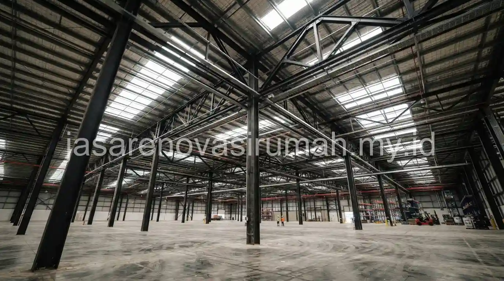
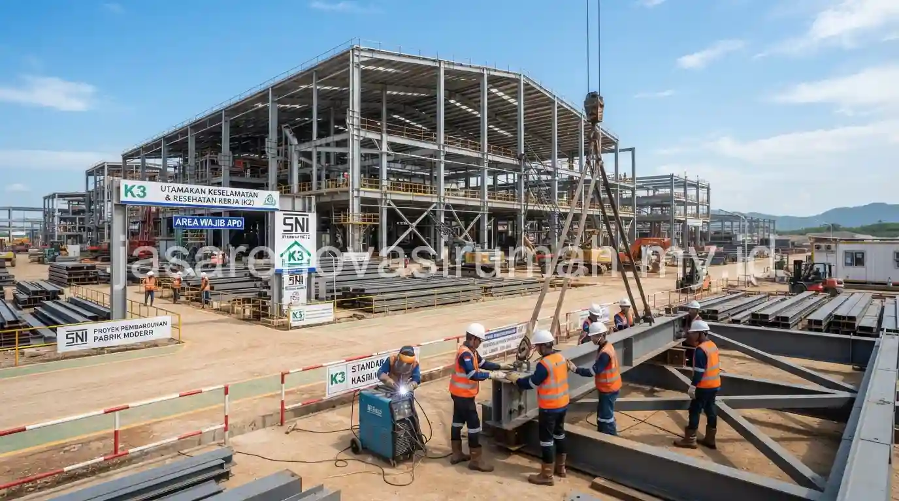

Jasa kontraktor bangunan pabrik dan gudang yang berpengalaman mengutamakan struktur baja berstandar SNI.
Perhitungan beban yang matang untuk kebutuhan operasional industri juga sangat penting.
Selain itu, RAB transparan diperlukan agar proyek berjalan sesuai anggaran dan timeline yang disepakati.
Bangunan pabrik dan gudang memiliki kebutuhan teknis yang berbeda dari bangunan rumah tinggal maupun ruko, terutama dari sisi bentang struktur dan kapasitas beban lantai.
Apa Saja Indikator Kontraktor Bangunan Pabrik yang Terpercaya?
Kontraktor pabrik yang terpercaya biasanya memiliki pengalaman proyek industri sebelumnya.
Mereka juga memiliki tim insinyur struktur bersertifikat.
Selain itu, mereka mampu menunjukkan kepatuhan terhadap standar SNI dalam setiap tahap pengerjaan.
Beberapa indikator yang bisa dicek sebelum menunjuk kontraktor pabrik atau gudang:
- Memiliki portofolio proyek pabrik atau gudang dengan skala serupa dengan kebutuhan perusahaan.
- Melibatkan insinyur struktur bersertifikat dalam perhitungan beban dan desain rangka baja.
- Menyediakan RAB rinci yang memisahkan komponen struktur, atap, dan utilitas industri.
- Memiliki legalitas usaha dan sertifikasi K3 konstruksi untuk menjamin keselamatan kerja di lapangan.
Bagi perusahaan yang sebelumnya sudah memiliki ruko atau bangunan komersial lain, kebutuhan legalitas dan struktur pada bangunan pabrik umumnya lebih kompleks.
Hal ini berbeda dibanding jasa kontraktor ruko yang pernah digunakan sebelumnya.
Oleh karena itu, pengalaman kontraktor pada proyek skala industri menjadi pertimbangan penting.
Baca Juga: Jasa Kontraktor Ruko Jakarta
Mengapa Struktur Baja Menjadi Pilihan Utama untuk Bangunan Industri?
Struktur baja dipilih karena mampu menopang bentang lebar tanpa banyak kolom di tengah ruangan.
Dengan begitu, area produksi atau penyimpanan barang bisa dimanfaatkan secara maksimal.
Beberapa keunggulan struktur baja untuk bangunan pabrik dan gudang:
| Aspek | Keunggulan Struktur Baja |
|---|---|
| Bentang ruangan | Mampu mencakup bentang lebar tanpa kolom tengah |
| Waktu pengerjaan | Umumnya lebih cepat dibanding struktur beton konvensional |
| Fleksibilitas | Mudah dikembangkan atau dimodifikasi di kemudian hari |
| Ketahanan | Tahan terhadap beban dinamis dari aktivitas mesin dan alat berat |
Meski demikian, struktur baja tetap memerlukan perlindungan tambahan seperti pengecatan anti karat dan pemeriksaan berkala.
Terutama untuk lokasi pabrik yang berdekatan dengan area lembap atau paparan bahan kimia industri.

Apa Saja Tahapan Pembangunan Pabrik atau Gudang dari Awal hingga Selesai?
Tahapan pembangunan pabrik umumnya dimulai dari studi kebutuhan operasional dan perencanaan struktur.
Kemudian dilanjutkan dengan pekerjaan pondasi dan rangka baja.
Hingga instalasi utilitas industri seperti listrik daya besar dan sistem pemadam kebakaran.
Berikut tahapan umum yang biasa dilalui dalam proyek pembangunan pabrik atau gudang:
- Studi kebutuhan operasional, termasuk kapasitas produksi dan alur logistik barang.
- Perencanaan struktur dan gambar kerja sesuai standar SNI konstruksi baja.
- Pekerjaan pondasi dan pemasangan rangka baja utama.
- Pemasangan atap, dinding panel, dan sistem ventilasi industri.
- Instalasi utilitas seperti listrik daya besar, sistem drainase, dan proteksi kebakaran.
Sebelum memulai konstruksi, perusahaan juga perlu memastikan legalitas lahan dan izin bangunan industri sudah lengkap.
Prinsip dasarnya serupa dengan pengurusan izin bangunan pada umumnya.
Meski dengan persyaratan tambahan khusus kawasan industri.
Kesalahan Umum Saat Membangun Pabrik atau Gudang
Kesalahan yang paling sering terjadi adalah tidak memperhitungkan kebutuhan pengembangan di masa depan.
Akibatnya, struktur awal sulit dimodifikasi ketika kapasitas produksi meningkat.
Kesalahan lain yang perlu dihindari:
- Mengabaikan sistem ventilasi dan pencahayaan alami sehingga area kerja terasa panas dan kurang nyaman.
- Tidak memperhitungkan kapasitas jalur akses untuk kendaraan pengangkut barang besar.
- Memilih kontraktor tanpa pengalaman proyek industri hanya karena penawaran harga lebih murah.
Pada akhirnya, membangun pabrik atau gudang membutuhkan kontraktor yang memahami standar struktur baja dan kebutuhan operasional industri secara menyeluruh.
Bukan sekadar mendirikan bangunan besar.
Tim jasa kontraktor pabrik terpercaya kami siap membantu mulai dari perencanaan struktur hingga serah terima.
Anda bisa mempelajari lebih lanjut layanan konstruksi baja kami sebelum memulai konsultasi proyek.